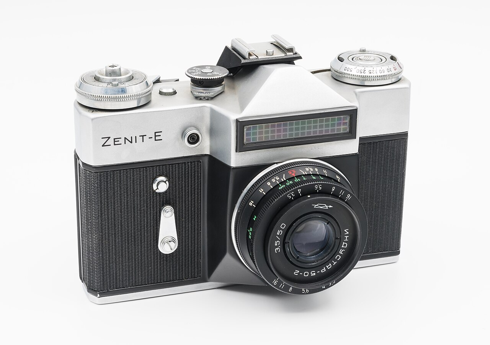
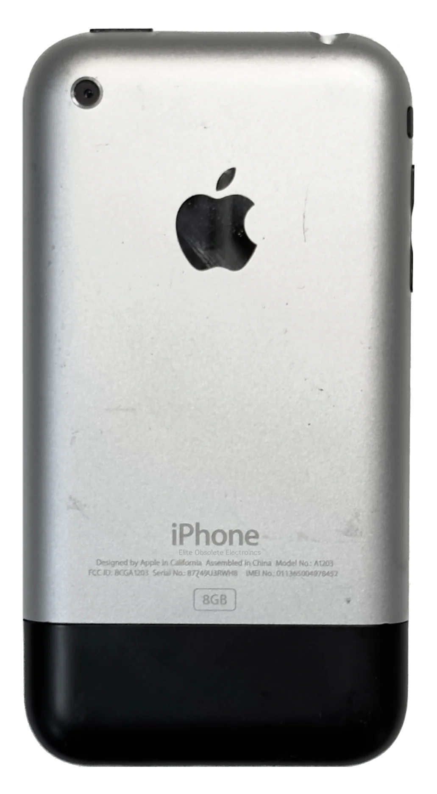
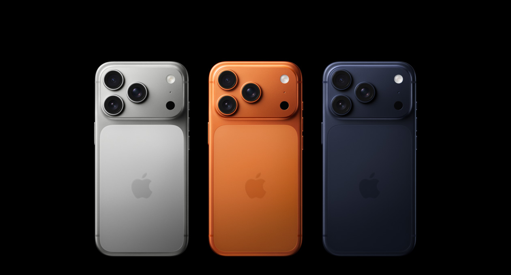

"AI MAKES
CODING FASTER."
Everyone knows this already.
But that is not the interesting part. →
CLOSER
TO USERS,
HIGHER IN
IMPACT
"AI MAKES
CODING FASTER."
Everyone knows this already.
But that is not the interesting part. →
Already table stakes.
Faster output is no longer the differentiator.
Before we answer —
AN ANALOGY.
What happens when a creative skill becomes easy?
1860s
PHOTOGRAPHY
WAS FOR
EXPERTS.
Expensive equipment. Specialist knowledge. Deep pockets required.

1970s
BETTER TOOLS.
STILL REQUIRED
CRAFT.
You still had to understand the machine.

2007
THEN EVERYONE
BECAME A
PHOTOGRAPHER.
The barrier to entry collapsed overnight.

TODAY
THE BOTTLENECK
SHIFTED.
Not "can you take a photo?" — but "what are you photographing, and why?"
LET'S GET BACK
TO REALITY.
THE
BUSINE$$.
WHEN BUILDING
GETS CHEAPER,
WHAT BECOMES
EXPENSIVE?
FASTER CODING ≠
BETTER PRODUCTS
We can now ship wrong things faster.
The goal is not more code. The goal is faster learning.
AI INFLATES
YOUR SCOREBOARD.
PR Count
AI generates code volume. More PRs signal busyness — not progress.
"Code is often seen as a liability, not an asset. Generating more code increases verification overhead and technical debt." — DORA 2026
Deploy Frequency
Frequency can rise while stability degrades. Higher ≠ healthier.
DORA 2026: AI adoption increases software delivery instability — the 2nd largest measured effect across all outcomes studied.
Optimize for outcomes. Not output.
DON'T
CODE MORE.
VALIDATE
FASTER.
EXPERIMENT
FREQUENCY.
Not how much you shipped — how much you learned.
"WHAT PROBLEM
ARE WE SOLVING?"
High-impact engineers reduce ambiguity before implementation.
Product judgment is
an engineering skill.
Engineers don't replace PMs. They become stronger partners.
The feedback loop is cross-functional.
Impact lives in the loop between these groups.
SHORTER BUILD CYCLES
→ SHORTER LEARNING CYCLES
AI should shorten the distance between assumption and evidence.
WEAK DATA →
WEAK AI
LLMs amplify the quality of your system.
"The highest-leverage work may not look like coding."
IT = INFORMATION
TECHNOLOGY
Domain models. Data quality. Relationships.
AI makes information architecture the real differentiator.
STOP SHIPPING
ISOLATED FEATURES.
START BUILDING
REUSABLE CAPABILITIES.
One platform. Many experiences.
HOW TO
DO IT?
"YOUR NEXT READER
MAY BE AN AI AGENT."
Everything must become explicit.
AI MAKES IT EASIER
TO ADD CODE.
NOT EASIER TO KEEP
SYSTEMS CLEAN.
Use AI to delete, simplify, refactor — not only to generate.
"IF AI WRITES IT
AND YOU SHIP IT,
IT IS YOUR CODE."
"DO NOT OUTSOURCE
YOUR JUDGMENT."
These become more important, not less.
NOW,
IT'S YOUR
TURN.
ANALYZE USER
BEHAVIOUR.
Bring real user data into the discussion.
MAP THE FULL
USER JOURNEY.
Pick a feature or workflow and dive deep.
Use Jobs to Be Done Framework →
DO A NO
CODE DAY.
How can you push the initiative forward without writing a single line of code?
Validate direction. Not just velocity.
BUILD
RELATIONSHIPS.
Unlocks new perspectives. Makes you more valuable and more connected to the business.
The next senior engineer is not the fastest coder.
IT IS THE PERSON WHO
CREATES THE MOST
VALIDATED IMPACT.
DON'T CODE MORE.
VALIDATE FASTER.
Closer to Users. Higher in Impact.